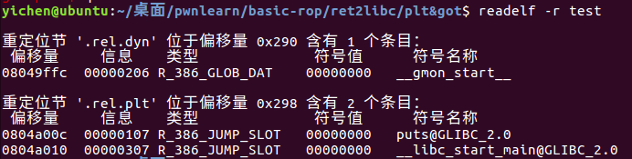
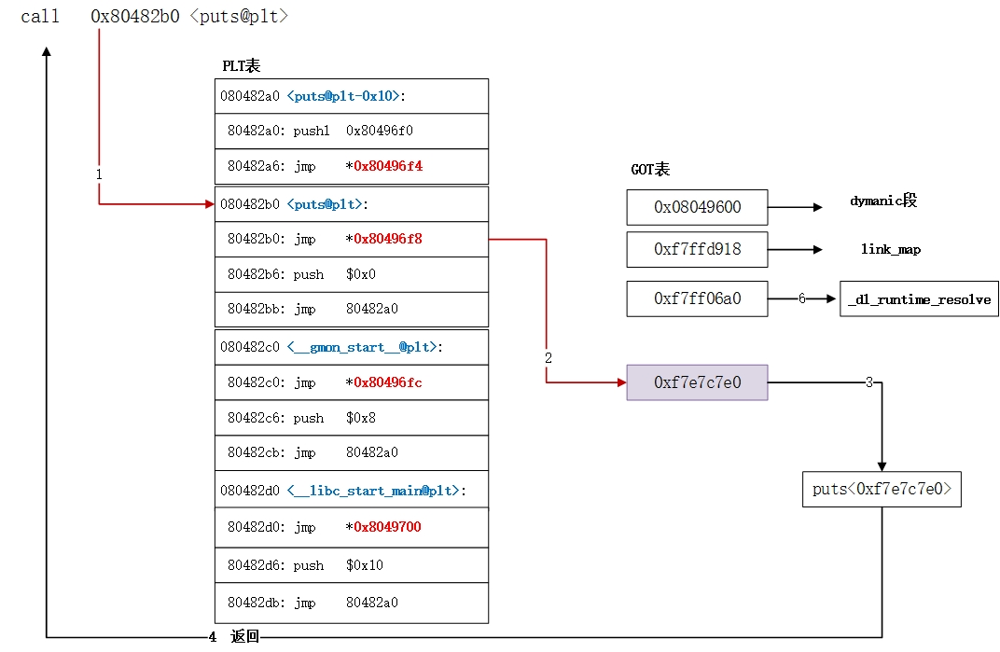

博文收藏
因为担心有些博文会被博主删除，在这里提前copy一份
文章转自：Basic-ROP · 语雀 (yuque.com)
* Linux动态链接
关于动态链接与静态链接，可以打个比方就是：如果我的文章引用了别人的一部分文字，在我发布文章的时候把别人的段落复制到我的文章里面就属于静态连接，而做一个超链接让你们自己去看就属于动态链接了
PLT&GOT
linux下的动态链接是通过PLT&GOT来实现的，这里做一个实验，通过这个实验来理解
使用如下源代码 test.c：
1 |
|
依次使用下列命令进行编译：
1 | gcc -Wall -g -o test.o -c test.c -m32 |
这样除了原有的 test.c 还有个 test.o 以及可执行文件 test
通过 objdump -d test.o 可以查看反汇编

printf() 和函数是在 glibc 动态库里面的，只有当程序运行起来的时候才能确定地址，所以此时的 printf() 函数先用 fc ff ff ff 也就是有符号数的 -4 代替
运行时进行重定位是无法修改代码段的，只能将 printf 重定位到数据段，但是已经编译好的程序，调用 printf 的时候怎么才能找到这个地址呐？
链接器会额外生成一小段代码，通过这段代码来获取 printf() 的地址，像下面这样，进行链接的时候只需要对printf_stub() 进行重定位操作就可以
1 | .text |
总体来说，动态链接每个函数需要两个东西：
1、用来存放外部函数地址的数据段
2、用来获取数据段记录的外部函数地址的代码
对应有两个表，一个用来存放外部的函数地址的数据表称为全局偏移表（GOT, Global Offset Table），那个存放额外代码的表称为程序链接表（PLT，Procedure Link Table）

可执行文件里面保存的是 PLT 表的地址，对应 PLT 地址指向的是 GOT 的地址，GOT 表指向的就是 glibc 中的地址
那我们可以发现，在这里面想要通过 plt 表获取函数的地址，首先要保证 got 表已经获取了正确的地址，但是在一开始就进行所有函数的重定位是比较麻烦的，为此，linux 引入了延迟绑定机制
延迟绑定
只有动态库函数在被调用时，才会地址解析和重定位工作，为此可以使用类似这样的代码来实现：
1 | //一开始没有重定位的时候将 printf@got 填成 lookup_printf 的地址 |
说明一下这段代码工作流程，一开始，printf@got 是 lookup_printf 函数的地址，这个函数用来寻找 printf() 的地址，然后写入 printf@got，lookup_printf 执行完成后会返回到 address_good，这样再 jmp 的话就可以直接跳到printf 来执行了
也就是说这样的机制的话如果不知道 printf 的地址，就去找一下，知道的话就直接去 jmp 执行 printf 了
接下来，我们就来看一下这个“找”的工作是怎么实现的：
通过 objdump -d test > test.asm 可以看到其中 plt 表项有三条指令
1 | Disassembly of section .plt: |
ps.这里 plt 表的第一项使用 objdump 的时候给没有符号名的一项自动改成了离他最近的一项，为了避免引起误会，改成了 common，而且随着不断深入，会发现，确实可以叫 common
其中除第一个表项以外，plt 表的第一条都是跳转到对应的 got 表项，而 got 表项的内容我们可以通过 gdb 来看一下，如果函数还没有执行的时候，这里的地址是对应 plt 表项的下一条命令，即 push 0x0
（说一下怎么查看，先 gdb test 然后 b main，再 run， 再 x/x jmp的那个地址 就可以）

还记得之前我们说的，在还没有执行过函数之前 printf@got 的内容是 lookup_printf 函数的地址吗，这就是要去找 printf 函数的地址了
现在要做的是：
1 | push $0x0 //将数据压到栈上，作为将要执行的函数的参数 |
接下来继续
1 | 080482d0 <common@plt>: |
我们同样可以使用 gdb 来看一下这里面到底是什么，可以看到，在没有执行之前是全 0
当执行后他有了值

这个值对应的函数是 _dl_runtime_resolve
那现在做一个小总结：
在想要调用的函数没有被调用过，想要调用他的时候，是按照这个过程来调用的
xxx@plt -> xxx@got -> xxx@plt -> 公共@plt -> _dl_runtime_resolve
到这里我们还需要知道
- _dl_runtime_resolve 是怎么知道要查找 printf 函数的
- _dl_runtime_resolve 找到 printf 函数地址之后，它怎么知道回填到哪个 GOT 表项
第一个问题，在 xxx@plt 中，我们在 jmp 之前 push 了一个参数，每个 xxx@plt 的 push 的操作数都不一样，那个参数就相当于函数的 id，告诉了 _dl_runtime_resolve 要去找哪一个函数的地址
在 elf 文件中 .rel.plt 保存了重定位表的信息，使用 readelf -r test 命令可以查看 test 可执行文件中的重定位信息

这里有些问题，对应着大佬博客说 plt 中 push 的操作数，就是对应函数在.rel.plt 段的偏移量，但是没对比出来
第二个问题，看 .rel.plt 的位置就对应着 xxx@plt 里 jmp 的地址
在 i386 架构下，除了每个函数占用一个 GOT 表项外，GOT 表项还保留了３个公共表项，也即 got 的前３项，分别保存：
got [0]: 本 ELF 动态段 (.dynamic 段）的装载地址
got [1]：本 ELF 的 link_map 数据结构描述符地址
got [2]：_dl_runtime_resolve 函数的地址
动态链接器在加载完 ELF 之后，都会将这３地址写到 GOT 表的前３项
跟着大佬的流程图来走一遍：
第一次调用

之后再次调用
* shellcode
文章转自：64位shellcode编写 | nuoye’s blog (nuoye-blog.github.io)
前言
目前网上主要是各种32位的shellcode编写教程，64位的比较少，这篇文章主要讲解一下64位shellcode的编写以及介绍几种比较常见的白名单绕过方法
64位shellcode编写
直接pwntools生成默认shellcode
这一种方法是最简单的，通过下面的代码即可生成一段64位shellcode代码：
1 | from pwn import * |
但这段代码有一个缺点，就是生成的shellcode比较长，在某些空间比较小的情况不能很好的使用，接下来我们就一步一步的学习手动编写shellcode吧。
手动编写shellcode
在手动编写shellcode之前，我们首先要知道shellcode这一段代码调动shell的原理。
linux中，存在着一系列的系统调用，这些系统调用都通过syscall指令来触发，并且通过rax寄存器作为系统调用号来区分不同的系统调用，可以通过查看linux源码目录下的arch/x86/entry/syscall_64.tbl获得对应的系统调用号。比如，execve对应的的系统调用号为59。
接着，即是通过rdi和rsi两个寄存器传入参数。其中，rdi是指向运行程序的路径的指针，rsi为一个指向0的指针，rdx为0。
总结下，我们应该完成如下操作：
1 | rax = 59 |
所以就可以编写我们就可以开始正式编写了：
1 | xor rdx,rdx |
(这里因为64位数据不能直接push，所以用了rax寄存器来传递)
编写完后，我们可以用pwntools模块来快速编译使用：
1 | from pwn import * |
这样生成的shellcode就只有30字节，一般这种大小就足够了。
白名单绕过
可打印ascii
这一种的限制一般是要求shellcode为可打印字符，包括字母、数字、符号。
针对这一种白名单，已经有了一个不错的工具：shellcode_encoder
使用这一工具首先需要安装z3-solver：
1 | $ pip install z3-solver |
开始生成可打印shellcode前，我们需要先将原来的shellcode输出到一个文件中，这里我们用python来执行：
1 | from pwn import * |
然后，将生成的shellcode文件放到shellcode_encoder目录下，运行：
1 | $ python main.py shellcode rax+29 |
其中，shellcode是我们生成的shellcode文件，然后因为漏洞程序是通过call rax调用shellcode的，以及shellcode_encoder生成shellcode时的偏移位置，所以这里用了rax+29。
然后就会自动生成可打印的shellcode了：
1 | Original length: 30 |
可以看到shellcode的总长是505，这样的长度对于某些特定的题目来说是不行的，所以下面介绍另一种shellcode。
纯数字字母shellcode
文章：https://hama.hatenadiary.jp/entry/2017/04/04/190129
这里就不具体分析了，直接给出最终的shellcode，感兴趣的可以自行阅读学习
1 | PPYh00AAX1A0hA004X1A4hA00AX1A8QX44Pj0X40PZPjAX4znoNDnRYZnCXA |
Dynamic and Static Link
原文链接：Dynamic and Static Link | Lantern’s 小站
库
库是写好的现有的，成熟的，可以复用的代码。现实中每个程序都要依赖很多基础的底层库，不可能每个人的代码都从零开始，因此库的存在意义非同寻常。
本质上来说库是一种可执行代码的二进制形式，可以被操作系统载入内存执行。
库有两种：静态库（.a、.lib）和动态库（.so、.dll）。
windows 上对应的是.lib .dll linux 上对应的是.a .so
编译过程
源文件（.h, .cpp 等） => 预编译 => 编译 => 汇编 => 链接 => 可执行文件
而静态库、动态库区别来自链接阶段如何处理库从而链接成可执行文件，分别称为静态链接和动态链接
静态库
在链接阶段，会将汇编生成的目标文件.o 与引用到的库一起链接打包到可执行文件中。因此对应的链接方式称为静态链接。
特点:
- 静态库对函数库的链接是在
编译阶段完成的 - 程序在运行时与函数库再无关系，移植方便
- 浪费空间和资源，因为所有相关的目标文件与涉及到的函数库将被链接合成一个可执行文件
问题:
- 空间浪费：如果静态库再内存中存在多份拷贝，例如该静态库占用 1 内存，有 2000 个程序运用了该静态库，将占用将近 2GB 内存
- 对程序更新、部署和发布带来麻烦：如果静态库 liba.lib 更新将导致它的应用程序都需重新编译、发布给用户。对用户而言可能是一个很小的改动，却导致整个程序重新下载，全量更新
动态库
动态库在程序编译时并不会被连接到目标代码中，而是在程序运行是才被载入。不同的应用程序如果调用相同的库，那么在内存里只需要有一份该共享库的实例，规避了空间浪费问题。动态库在程序运行是才被载入，也解决了静态库对程序的更新、部署和发布页会带来麻烦。用户只需要更新动态库即可，增量更新。
特点:
- 动态库把对一些库函数的链接载入推迟到程序运行的时期
- 可以实现进程之间的资源共享（因此动态库也称为共享库）
- 程序升级变得简单
- 可以真正做到链接载入完全由程序员在程序代码中控制（显示调用）
问题:
- “DLL 地狱”: 如果较新的版本不能正确地向后兼容，则不兼容的更新库将破坏依赖于库以前版本的可执行文件
- 程序及其使用的库可以作为软件包进行认证（例如，关于正确性，文档要求或性能）, 但是，如果可以更换组件，则不能。（这也反对在关键系统中自动进行操作系统更新；在两种情况下，操作系统和库均构成合格环境的一部分）
参考:
链接：深入理解GOT表覆写技术 - 安全客，安全资讯平台 (anquanke.com)
ubuntu vscode
Ubuntu使用VSCode无法输入中文_饿鬼点心的博客-CSDN博客